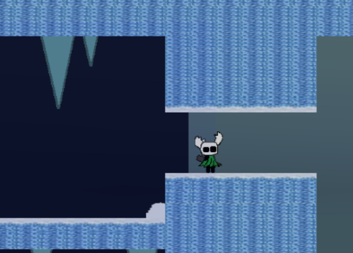

Heya!
So uh...
It's been a while lol.
If you've been following what I've been working on recently, you probably already know exactly what happened.
"Floodgate happened"
I started working on Floodgate a LOT more, got completely carried away with it, and HKT kinda just sat there for a while.
Not abandoned!
Just...
sitting there.
BUT!
I'm working on Hollow Knight: Together again!
And surprisingly, my first instinct wasn't to immediately add 700 new areas, 14 bosses, another act, and make the game take another 4 years to finish.
Instead, I've mostly been going back through what already exists and making it actually feel finished.
There's a LOT of stuff in HKT already, and coming back to it after working on other games made me realize how much I've learned since some of these rooms were originally made.
So I've been fixing things.
Reworking things.
Adding things.
And occasionally staring at something I made ages ago and wondering what the hell I was thinking.
Anyway!
Here's some of the stuff I've been doing :P
OLD AREAS ARE GETTING REDONE!!
One of the biggest things I've noticed coming back to HKT is just how much my game development has changed since I made some of these areas.
Some of them are OLD.
Like...
really old.
And you can tell lol.
A lot of the layouts themselves are still fine, so I don't want to completely delete everything and rebuild the entire game from scratch.
That sounds like a GREAT way to never finish HKT.
Instead, I've been going through older areas and reworking the visuals, effects, animations, and little environmental details while keeping the actual identity of the areas intact.
A big problem with some of the older rooms was that they were VERY static.
You had platforms.
You had a background.
You had the player moving around.
And...
that's about it.
It worked!
But it didn't exactly feel alive.
So now there's a lot more movement happening around you.
Background objects animate.
Particles and effects show up in more places.
Parts of the environment actually move.
Rooms have gotten more little details that make them feel like places instead of a bunch of collision blocks sitting in front of an image.
Plasmium Plateau got one of the biggest visual reworks so far, but a bunch of other areas have gotten smaller upgrades too.
None of these things are MASSIVE additions on their own.
But when there's a hundred tiny details moving around at once, it makes a pretty huge difference.
The whole game just feels way nicer to move through now.
Also I added a frontflip when you pogo something.
Was this necessary?
No.
Is it staying?
Absolutely.
THE PALE CHILD GOT BUFFED (+ other bosses)
Remember this little guy?
Well.
He's stronger now.
The Pure Child fight has been changed around and buffed quite a bit.
The old version wasn't HORRIBLE, but for one of the bigger fights near the end of Act 1, it didn't really have the impact I wanted it to have.
You could kinda just walk in and beat the shit out of him.
Which was funny.
But probably not ideal.
So now he's faster, more aggressive, and generally much less interested in letting you stand next to him and attack for free.
Some attacks have been adjusted, the pacing of the fight feels better, and overall he puts up a much bigger fight than he used to.
I still have some balancing to do before I'm completely done with him, especially with two players involved, but I'm MUCH happier with how the fight feels now.
Tiny vessel has learned more violence.
Good for him.
IT'S COLD NOW!!!

There's also a completely new icy area now!This one's a little different from most areas in HKT because the environment itself is basically trying to kill you.
While you're inside, the cold slowly builds up and eventually starts damaging you.
So instead of being able to stand around forever deciding where you're going, you actually have to keep moving and reach warm spots before you freeze.
There are fires scattered through the area where you can stop, warm back up, and prepare for the next section.
The entire area is basically one big race downward through a bunch of platforming while trying not to become a Knight-shaped ice cube.
It's not one of the hardest areas in the game, but it's a fun little gimmick and changes how you approach the room.
And yes.
There's a new charm involved too.
Once you earn it, the cold becomes a LOT less of a problem.
I'm not gonna explain EVERYTHING about where it is or exactly how you get it here because I would like at least ONE thing in this game to still be a surprise lol.
SINGLEPLAYER EXISTS, I SWEAR
Singleplayer has also gotten more work.
HKT is obviously built around having two players, but I still want the game to actually function properly if you're playing alone.
So I've been going back through things that were originally designed almost entirely around multiplayer and making sure they don't completely fall apart when there's only one Knight running around.
There are still things I need to check and rebalance, but singleplayer is in a much better place than it used to be.
Which is nice because apparently some people DON'T have another person sitting next to them ready to play Hollow Knight fan-games at all times.
Weird.
OTHER TINY THINGS!!!
There's also been a bunch of smaller stuff that doesn't really deserve an entire section by itself.
The Pale Garden got nerfed because apparently past me decided that area needed to personally hate the player.
There's a new tutorial area.
Some UI stuff has been changed.
Movement has gotten more little adjustments.
Animations have been touched up.
Some rooms have gotten small layout changes.
There are new effects in places that felt too empty.
Bugs have been fixed.
Other bugs have probably been created.
And there are approximately 400 tiny changes scattered around the project that I have already completely forgotten about.
That's usually how game development goes.
You spend two hours fixing one very specific thing and then three days later you don't even remember doing it.
Basically:
HKT is being worked on again.
WHAT NOW?
I'm still working on Floodgate.
HKT coming back does NOT mean I abandoned Floodgate and immediately ran into another project again lol.
I'm working on both.
Sometimes I'll feel like working on Floodgate.
Sometimes I'll feel like working on HKT.
And honestly, that's been working pretty well.
Floodgate lets me work on something completely different and learn more 3D stuff, while HKT gives me a project I already know inside and out where I can just sit down and start making things.
And coming back to HKT after spending time away from it has actually been really nice.
I can look at something I made months ago, immediately see what I don't like about it anymore, and actually know how to make it better now.
There is still a LOT left to do.
Act 1 isn't magically finished because I came back.
There are still areas to finish, bosses to work on, progression to clean up, bugs to murder, and probably several things I don't even know are broken yet.
But progress is happening again.
Real progress!
And for the first time in a while, I can actually see a version of HKT where I stop endlessly adding things and just...
finish it.
Terrifying concept, I know.
But yeah.
I'm working on it again.
I'm having fun with it again.
And it feels really nice to be back :)
More eventually!
See ya.